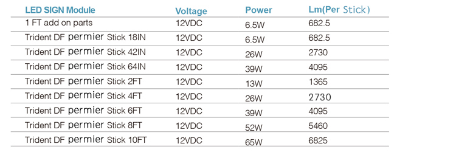

<div class="product-details margit-top110">
	<div class="container">
		<div>
			
		</div>
		<div class="row bottom-line">
			<div class="col-xs-12 col-sm-7 col-md-7">
				<p>
					We've redesigned the Trident Stick making it brighter than ever.  The new DF 12V Trident Stick uses a 12V power supply, and includes 12 LED's per module making it brighter than the original Trident Stick. Undeniably one of the most energy efficient, and cost effective LED technologies availablve today.
				</p>
			</div>
			<div class="col-xs-12 col-sm-5 col-md-5">
				<a class="download_layout"  href="download_files/G2G_Module_Catalog.pdf" target="_blank">Download The Product Catalog</a>
			</div>
		</div>
		<div class="row product-features">
			<h3 class="specification">LED MODULE FEATURES</h3>
			<p>
				• Designed for 10" deep -24" deep double face sign boxes
				<br> • Available in single or double-sided applications
				<br> • 12 VDC Constant Current Technology (CCT)
				<br> • IP 66 wet-location
				<br> • UL and cUL Recognized
			</p>

		</div>

		<h3 class="specification">LED MODULE SPECIFICATIONS</h3>
		<div>
			
		</div>
		<h3 class="specification">LED MODULE DIMENSIONS</h3>
		<div>
			
		</div>

	</div>
</div>